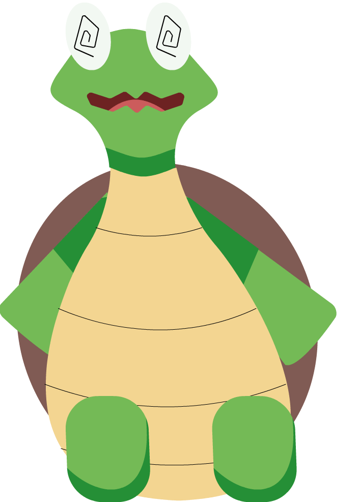
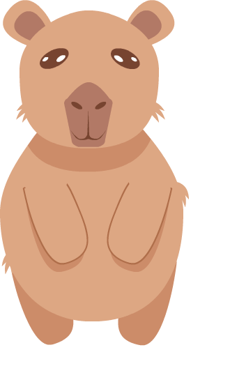
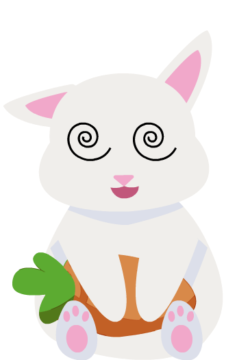
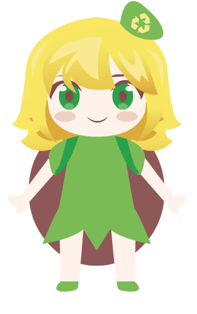
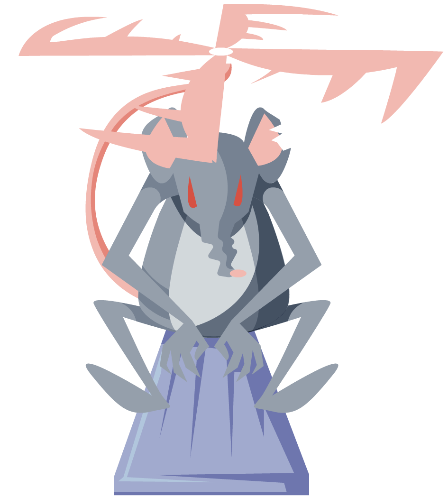

🌱🦸♂️ Nuestros Héroes Verdes 🦸♀️🌿

SHELLY
Líder Tortuga
Purificación
Defensa

LAF
El Catalizador Verde
Metamorfosis de Residuos
Turbo Reciclaje
Barrera Bioplástica

BIGOTÍN
El Torbellino del Bosque
Huracán de Semillas
Nube Purificadora
Camuflaje Silvestre

MARÍA
La Guardiana de los Bosques Brillantes
Toque de renacer
Inovación de Faunasilva
Barrera de luz ferica

REMOLÍN
La Centinela del Sol
Fotosíntesis Explosiva
Espinas Fotovoltaicas
Eclipse Verde
Ratacóptero
Amenaza Máxima

Contaminación Tóxica
Generación de Basura